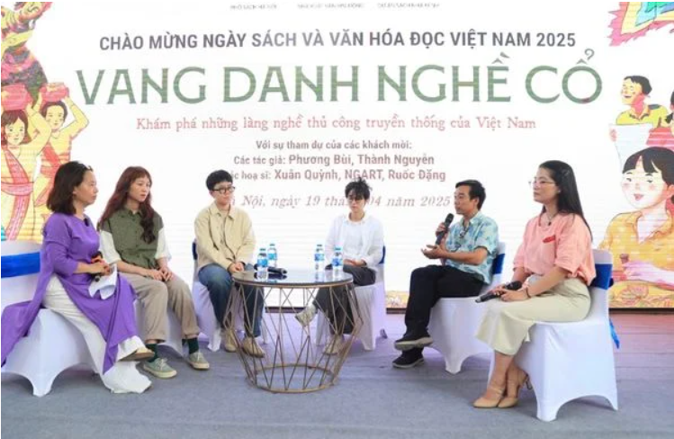
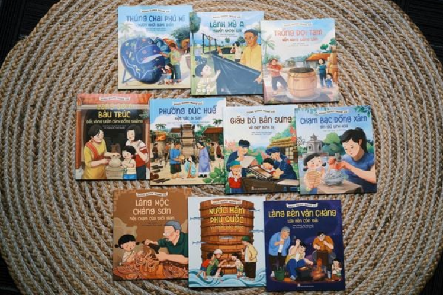

Nằm trong chuỗi hoạt động hưởng ứng Ngày Sách và Văn hóa đọc Việt Nam lần thứ tư năm 2025 tại Phố sách Hà Nội, chiều 19-4, Nhà Xuất bản Kim Đồng phối hợp với Dự án sách Nhà Minh tổ chức giao lưu ra mắt bộ sách “Vang danh nghề cổ - Khám phá những làng nghề thủ công truyền thống của Việt Nam”.
Bộ sách “Vang danh nghề cổ do Nhà Xuất bản Kim Đồng ấn hành, hiện có 10 tập. Theo hành trình của cô bé An – nhân vật chính trong mỗi tập, độc giả có những chuyến đi khám phá khắp mọi miền đất nước. Mỗi tập là những lát cắt sống động về lịch sử hình thành phát triển và quy trình độc đáo của từng làng nghề, như làm giấy dó, làm gốm, đúc đồng, làm lụa, làm trống, chạm bạc, làm mộc, làm nưóc mắm, nghề rèn, làm thúng chai.
Với mục tiêu tiếp cận lứa tuổi nhỏ, Nhà Xuất bản Kim Đồng đã cùng phối hợp với đội ngũ tác giả, hoạ sĩ đầu tư vào minh hoạ, đem lại những trang sách với tranh vẽ màu sống động, mang đậm dấu ấn văn hoá cổ truyền nhưng vẫn trẻ trung, gần gũi với lứa tuổi tiểu học.
Không chỉ là một bộ tranh truyện, “Vang danh nghề cổ” còn là bộ công cụ giáo dục trực quan, góp phần giúp các em học sinh nhận thức được tầm quan trọng của văn hoá làng nghề trong đời sống hiện đại và góp phần gìn giữ bản sắc dân tộc. Qua mỗi trang sách, các em hiểu rằng giữ gìn cội nguồn; chính là giữ một nhịp mạch, là bảo tồn các mốt kho tàng lịch sử, thẩm mỹ và tinh thần Việt Nam, từ đó khơi dậy tình yêu đối với văn hoá truyền thống của đất nước.
Tại buổi giao lưu, nhóm tác giả Phương Bùi, Thành Nguyên và nhóm hoạ sĩ NGART, Xuân Quỳnh, Rước Đặng đã chia sẻ về cảm hứng, hành trình tìm kiếm tư liệu nội dung và những câu chuyện thú vị xoay quanh quá trình sáng tác.
Theo tác giả Thành Nguyên, nhóm tác giả và hoạ sĩ đã dành nhiều thời gian đi thực địa khắp các làng nghề của Việt Nam, gặp gỡ, ghi chép các nghề cổ, các nghệ nhân, sưu tầm, tham khảo, đối chiếu thông tin từ “Tổng tập làng nghề Việt Nam” cùng nhiều nguồn tư liệu khác để thực hiện bộ sách. Nhóm cho biết sẽ tiếp tục đưa đi dàn sách này dày hơi, để giới thiệu thầy trò ngoài nhà trường, các thư viện, các điểm đọc trên cả nước.
Ngoài phần giao lưu, độc giả còn có cơ hội cho các trò chơi tương tác để tìm hiểu về những làng nghề thú vị, được giới thiệu trong bộ sách “Vang danh nghề cổ”.